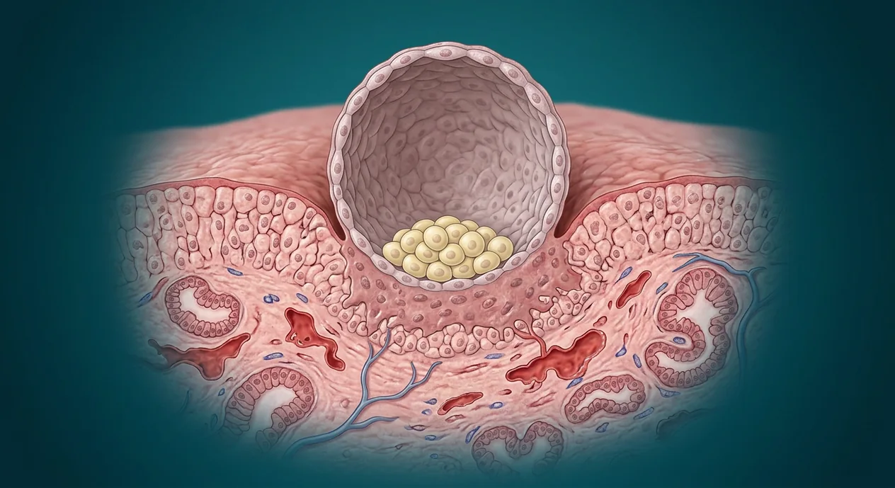

ORGAN → UNDER THE LENS
Blastocyst cutaway
Tap to compare the organ region with a tissue-level teaching illustration.
Read about Hatched blastocyst ↓Understand hatching, apposition, attachment, cytotrophoblast, syncytiotrophoblast, decidua and early corpus luteum support.

Hatched blastocystCytotrophoblastAppositionAdhesionInner cell massSecretory endometriumMaternal endometrial vesselsEarly chorionEarly trophoblastic lacunaeSyncytiotrophoblastHuman chorionic gonadotropinDecidualizing stromal cellsUterine glandsA hatched blastocyst attaches to receptive endometrium around the end of the first post-fertilization week, with timing variable. Its trophoblast differentiates into cytotrophoblast and syncytiotrophoblast, which interact with maternal tissue and begin early placental development; the inner cell mass gives rise to embryo proper. hCG supports the corpus luteum and progesterone early in pregnancy. Implantation within the uterine lining is distinct from normal fertilization in the uterine tube. The generated microanatomy is a conceptual section, not a patient biopsy or a claim about exact days. Ectopic implantation requires clinical assessment.
These are educational cutaways, not literal magnifications of an organ pixel or laboratory slides. A ring marks the approximate tissue region; part-specific lines appear only where identifiable.
Tap to compare the organ region with a tissue-level teaching illustration.
Read about Hatched blastocyst ↓Tap to compare the organ region with a tissue-level teaching illustration.
Read about Cytotrophoblast ↓Sperm and egg are separate branches before fertilization. Obstetric gestational weeks are usually counted from the last menstrual period, roughly two weeks before conception. Digital labor-stage illustrations model separate moments, not clinical birth photographs or patient measurements.
Tap an image to enlarge and tap again to close. These are digital educational models, not microscope photos, measured ultrasounds, clinical birth images or exact developmental clocks.
Preimplantation conceptual model; do not interpret it as already embedded.
Digital endometrial attachment cutaway; not a clinical implantation photograph.
Digital uterine lining model for glands and stroma; not a true sample from the pictured pregnancy.
These 13 structures describe anatomy related to the chapter’s regional illustration. Each entry separates location, function and a clinical point.
Zona-free blastocyst can directly interact with receptive endometrial surface.
What it doesAllows attachment and invasion.
Clinical connectionHatching alone does not establish an ongoing pregnancy.
Picture context Preimplantation conceptual model; do not interpret it as already embedded.
Progesterone-conditioned uterine mucosa provides glands, vessels and receptive tissue.
What it doesSupports embryo–maternal interaction.
Clinical connectionA nonpregnant uterus image is contextual, not confirmation of implantation.
Picture context Digital endometrial attachment cutaway; not a clinical implantation photograph.
Initial loose positioning of blastocyst next to endometrial epithelium.
What it doesPrecedes firmer attachment.
Clinical connectionThe illustration cannot time this microscopic event exactly.
Picture context Digital endometrial attachment cutaway; not a clinical implantation photograph.
Trophoblast contacts and binds to receptive endometrial surface.
What it doesBegins stable implantation.
Clinical connectionA visually adjacent sphere is not automatically attached.
Picture context Digital endometrial attachment cutaway; not a clinical implantation photograph.
Proliferative cellular trophoblast layer contributes cells to early placental structures.
What it doesSupports growth and differentiation of trophoblast.
Clinical connectionIndividual cell boundaries in this image are simplified.
Picture context A related regional anatomy model; the individual event or cell is not separately identifiable in this picture.
Outer multinucleated trophoblast layer invades the decidualizing endometrium.
What it doesAnchors conceptus and participates in hormone production.
Clinical connectionDo not treat the illustration as a diagnostic specimen.
Picture context A related regional anatomy model; the individual event or cell is not separately identifiable in this picture.
Endometrial stromal cells transform under progesterone during early pregnancy.
What it doesProvide maternal support at implantation site.
Clinical connectionDecidual change alone does not date pregnancy precisely.
Picture context Digital endometrial attachment cutaway; not a clinical implantation photograph.
Endometrial glands remain part of receptive uterine mucosa.
What it doesSupply local secretions early in pregnancy.
Clinical connectionA gland profile is not a developing embryo.
Picture context Digital endometrial attachment cutaway; not a clinical implantation photograph.
Vessels within maternal uterine tissue remodel as placental interface evolves.
What it doesProvide later maternal blood to intervillous region.
Clinical connectionEarly vessels and established mature circulation are different stages.
Picture context Digital endometrial attachment cutaway; not a clinical implantation photograph.
Fluid spaces develop within syncytiotrophoblast during early interface formation.
What it doesContribute to early placental exchange region.
Clinical connectionThe plate is schematic, not a measured maternal blood-flow map.
Picture context Digital endometrial attachment cutaway; not a clinical implantation photograph.
Trophoblast-derived hCG acts to preserve corpus luteum in early pregnancy.
What it doesHelps sustain progesterone support.
Clinical connectionhCG testing needs actual clinical sampling.
Picture context Digital endometrial attachment cutaway; not a clinical implantation photograph.
Blastocyst cell group away from trophoblast contributes to embryo proper.
What it doesSeeds embryonic tissues.
Clinical connectionNot the same tissue as maternal uterine glands.
Picture context Digital endometrial attachment cutaway; not a clinical implantation photograph.
Extraembryonic membrane derives from trophoblast-associated layers.
What it doesContributes to fetal side of developing placenta.
Clinical connectionNot fully developed placenta at first attachment.
Picture context Digital endometrial attachment cutaway; not a clinical implantation photograph.
These 7 anatomy and development entries explain each stage without placing false pointers on an illustrative context plate.
Ovarian progesterone secretion persists in early pregnancy under hCG influence.
What it doesMaintains receptive endometrium before placental steroid output predominates.
Clinical connectionNo corpus luteum is visible on this uterine microsection.
Picture context A related regional anatomy model; the individual event or cell is not separately identifiable in this picture.
Early embryonic cell population derived from inner cell mass.
What it doesContributes to embryo proper and amniotic lineage.
Clinical connectionDetailed bilaminar boundaries are not identifiable on this conceptual plate.
Picture context Digital endometrial attachment cutaway; not a clinical implantation photograph.
Early bilaminar cell population related to extraembryonic endoderm formation.
What it doesContributes to early yolk-sac lining.
Clinical connectionDo not claim precise cell-level visualization here.
Picture context Digital endometrial attachment cutaway; not a clinical implantation photograph.
Membrane and cavity start to develop adjacent to embryonic cells during early weeks.
What it doesProvides future protective fluid environment.
Clinical connectionDo not mistake blastocoel for the mature amniotic sac.
Picture context Digital endometrial attachment cutaway; not a clinical implantation photograph.
Extraembryonic cavity forms early and supports developmental processes.
What it doesParticipates in early nutrient transfer and blood formation.
Clinical connectionDoes not mean a human pregnancy depends on an avian-style food-filled yolk.
Picture context Digital endometrial attachment cutaway; not a clinical implantation photograph.
Blastocyst may implant outside the uterine cavity, commonly in a uterine tube.
What it doesExplains why normal tube fertilization must be followed by uterine transport.
Clinical connectionSuspected ectopic pregnancy with pain or bleeding requires urgent assessment.
Picture context A related regional anatomy model; the individual event or cell is not separately identifiable in this picture.
Attachment commonly starts roughly one week after fertilization, with individual variation.
What it doesSeparates postfertilization age from LMP-based obstetric age.
Clinical connectionA digital image cannot date an individual pregnancy.
Picture context Digital endometrial attachment cutaway; not a clinical implantation photograph.
Short answers grounded in the structures described above. Use the illustrated guide for anatomical context.
It typically attaches to receptive uterine endometrium, often in the upper or posterior uterus. Implantation within a uterine tube is ectopic and requires medical assessment.
Attachment commonly begins around the end of the first post-fertilization week, with variation. This is not the same as obstetric weeks counted from the last menstrual period.
Cytotrophoblast is a cellular proliferative component; the outer syncytiotrophoblast is multinucleated and invades the endometrium. Both are early trophoblastic components, not a mature placenta by themselves.
Trophoblast-derived hCG maintains the ovarian corpus luteum so it continues progesterone production early in pregnancy. Later placental hormone production develops as the pregnancy progresses.
No. Gamete fusion normally happens in a uterine tube. The conceptus then develops through divisions and reaches the uterus before a hatched blastocyst attaches to endometrium.
Follow these connected structures and body systems in the illustrated atlas.
 Zygote to blastocyst · early divisionsTrace the separate preimplantation chapter: zygote, cleavage, morula, blastocoel and hatching.↗
Zygote to blastocyst · early divisionsTrace the separate preimplantation chapter: zygote, cleavage, morula, blastocoel and hatching.↗ Placenta · maternal–fetal exchangeSeparate placenta chapter: chorionic villi, decidua, separated circulations, cord and membranes.↗
Placenta · maternal–fetal exchangeSeparate placenta chapter: chorionic villi, decidua, separated circulations, cord and membranes.↗ Uterus — layers & cavityThe womb in cross-section: endometrium, junctional zone, myometrium, cavity, isthmus and the key clinical boundaries.↗
Uterus — layers & cavityThe womb in cross-section: endometrium, junctional zone, myometrium, cavity, isthmus and the key clinical boundaries.↗ Female pelvis & perineumThe female pelvic floor in sagittal section: bladder and urethra, vagina and anteverted uterus, rectum behind — plus the ligaments and pouches that position them.↗
Female pelvis & perineumThe female pelvic floor in sagittal section: bladder and urethra, vagina and anteverted uterus, rectum behind — plus the ligaments and pouches that position them.↗General anatomy references and related source chapters for continued study. These links do not make the digital illustrations clinical images or certify every anatomical variant.
This educational page is not medical advice and has not undergone formal clinical peer review. Spotted an error? Contact the editor.
Open the regional digital plate, study entries and a short self-test. Visible markers occur only for identifiable sperm and oocyte structures.